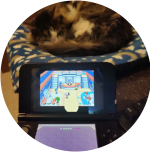

Canal no Youtube
Canal no YoutubeUm dos meus hobbies preferidos é jogar video-game 🎮, apesar disso eu nunca joguei uma das franquias que sempre esteve presente na minha vida que é o Pokemon. Eu lembro de assistir o anime quando criança, apesar de eu não lembrar nada dele atualmente, lembro de ter tirado o Caterpie na pokebola da guaraná pitchulinha 🐛, atualmente eu coleciono as cartas do TCG (como é caro eu só compro de vez enquanto mesmo) 🎴, jogo Pokemon Go 📱, Pokemon TCG Pocket, TCG Físico e de Pc, mas mesmo assim eu NUNCA JOGUEI os jogos principais da franquia 😲. Considero isso um erro meu que tenho que corrigir 🤭.
Para dizer que nunca joguei, graças ao meu irmão que é muito fã dos jogos (ele chegou a comprar um 3DS por causa de pokemon) eu joguei o Pokemon Black, e apesar de ter gostado muito eu sinto que não aproveitei ao máximo o que o jogo tinha a me oferecer. Primeiro que eu não sei o idioma inglês (uma vergonha pois já tive muita oportunidade de aprender, inclusive esse meu irmão é professor de Inglês) 🙄, um dificultador para esses jogos que não tem tradução oficial e a ROM que meu irmão baixou era com português de Portugal e ela traduzia até os nomes dos pokemons, então não guardei nome de pokemon nenhum 🤡. E segundo eu não cheguei a usar item nenhum, não sei para o que serve as berries, os HMs, os TMs e por aí vai 😒.
Com isso, eu decidi mudar essa história, e é aí que esse projeto nasce 💡. Eu irei me tornar A MESTRE POKEMON e irei registrar toda essa jornada no canal do YouTube, no TikTok e futuramente no meu site. 🎥
Eu irei jogar todos os jogos da franquia principal, escolhendo um de cada geração (porque sempre lançam mais de uma versão), por ordem de lançamento e irei terminar toda a história. E como um bônus vou completar a Pokedex (não prometo que irei conseguir).
Vou fazer a postagem da gameplay editada e resumida nos canais editados acima. Será uma jornada longa e exaustiva 🏔, mas estou muito empolgada para isso, pois irei ter que desenvolver várias habilidades durante esse processo que creio ser importante para o minha evolução pessoal e profissional.
Siga os canais abaixo para não perderem essa jornada.